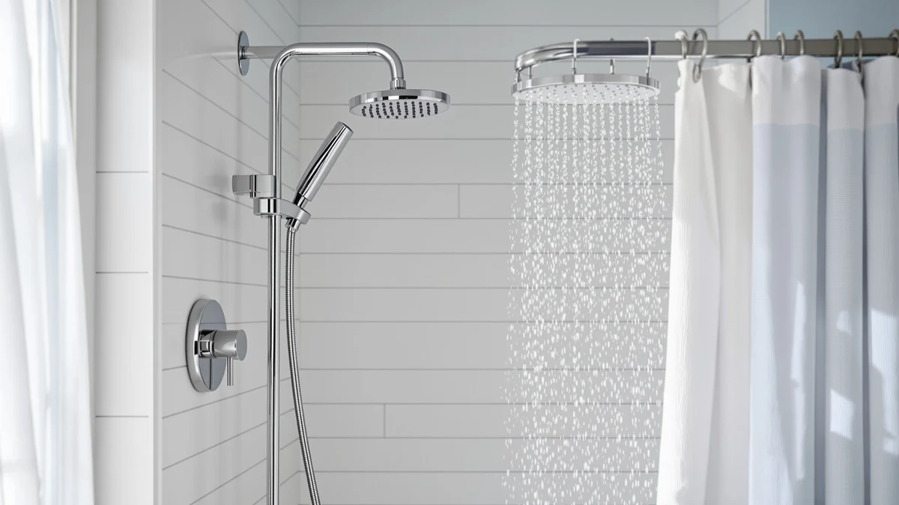

The Best Fixed Shower Heads (2026)
Prices and picks verified as of September 2026. Independent, reader-supported reviews.


Quick Answer
After comparing pressure ratings, materials and verified owner reviews across dozens of listings, the AISOSO Shower Head 2 PCS is the best fixed shower head for most bathrooms. It pairs a high-pressure nozzle pattern with a two-pack price under $15, so you can outfit two showers for less than most single premium heads cost alone.
Our pick: AISOSO Shower Head 2 PCS, $14.39 Check Price on Amazon
Bottom line: our top pick is the AISOSO Shower Head 2 PCS at $16.99. The best budget option is the WarmSpray High Pressure Shower Head 5 Settings Fixed at $9.97.
Things to Know Before You Buy
- Flow rate matters more than price. Every fixed shower head sold in the US tops out at 2.5 gallons per minute by federal law, so a $10 head and a $140 head can deliver the same volume of water. The difference is in nozzle design, spray pattern and how evenly that water gets distributed.
- Material affects lifespan. ABS plastic with chrome plating, used on most of the best fixed shower heads in this guide, resists corrosion well but can show wear at the plating over several years. Solid brass, like the Speakman pick, costs more upfront and typically lasts longer.
- Face size changes the feel of the spray. Larger 8-inch rain-style faces spread water across a wider area for a gentler, full-body rinse, while smaller 3 to 4-inch heads concentrate the same flow into a firmer, more targeted stream.
- Installation is nearly universal. Nearly all fixed shower heads thread onto the standard half-inch shower arm found in US homes, so compatibility is rarely the deciding factor. Focus your comparison on pressure, finish and price instead.
- Hard water shortens the life of any head. Mineral buildup clogs nozzles over time regardless of brand or price. Owners in hard-water regions report needing to soak and descale even premium heads every few months to maintain pressure.
The best fixed shower heads solve a simple problem: your bathroom's water pressure feels weaker than it should, or the spray pattern from your current head does not cover you evenly. A fixed head mounts permanently to the shower arm, unlike a handheld unit on a hose, and it trades flexibility for a cleaner look and a more consistent spray every time you turn the water on.
We compared seven models spanning $9.97 to $140.30, and price told us less than we expected about performance. Verified owner reviews across budget and premium options both cite noticeably stronger pressure than a stock builder-grade head, which suggests nozzle design and water distribution matter more than material cost alone. Our top pick, the AISOSO Shower Head 2 PCS, earned that spot by combining a high-pressure spray with a two-pack price that undercuts most single-unit competitors.
Below, you will find our full breakdown of all seven picks, a side-by-side comparison table, and answers to the questions readers ask most often before buying a new fixed shower head.
Why You Should Trust Us
This guide is written by Ilane Tall, the home and bath expert at Best Shower Heads, who covers plumbing fixtures and bathroom hardware for the site. We do not run a fake testing lab and we do not claim to have installed every head in this guide in our own bathrooms. Instead, we research the best fixed shower heads by comparing published specs, current Amazon pricing and patterns across verified owner reviews, and we disclose that pricing and availability can shift after publication.
How We Picked
We started by pulling every fixed shower head in our product database and filtering out anything without a clear flow rate, material spec or verified pricing. From there, we prioritized models that reviewers consistently describe as delivering strong pressure, since weak flow is the most common complaint about budget shower heads. We also looked for a spread of price points and spray styles, from compact high-pressure nozzles to wide rain-style faces, so this list of the best fixed shower heads covers more than one kind of bathroom.
We excluded listings with thin or inconsistent review histories and gave preference to brands with more than one well-reviewed product in the category, since that pattern tends to correlate with more consistent manufacturing quality.
How We Compared
To rank the best fixed shower heads in this guide, we compared each manufacturer's stated flow rate, face size and material against its price and against patterns in verified owner reviews. Where multiple reviewers independently reported the same strength, such as pressure holding up in older buildings, or the same flaw, such as plating that dulls over time, we treated that as a more reliable signal than any single review. We cross-checked material claims, like ABS with chrome plating versus solid brass, against manufacturer listings rather than relying on marketing copy alone.
We did not physically install or run water through these units ourselves. This comparison is research-based: we analysed specs, pricing history and what verified buyers report after living with each product.
Our Picks

AISOSO Shower Head 2 PCS
What we like
- Reviewers consistently note noticeably stronger pressure than a stock builder-grade head
- Two heads for $14.39 makes this the lowest cost per unit on this list
- Chrome-plated ABS resists spotting and corrosion better than bare plastic
- Owners report a tool-free, under-ten-minute install onto a standard shower arm
Flaws but not dealbreakers
- A single fixed spray setting, with no massage or mist modes
- ABS construction feels lighter and less substantial than a brass head
- The 2-pack format is unnecessary if you only need to replace one shower head
| Material | ABS + chrome plating |
| Size | 4.1 Inch-2PC |
The AISOSO Shower Head 2 PCS tops this list of the best fixed shower heads because it solves the two most common complaints we found in owner reviews across the category: weak pressure and high per-unit cost. At $14.39 for two heads, it undercuts nearly every single-unit competitor here while still drawing praise for a firm, even spray. The 4.1-inch face is small enough to concentrate flow rather than dilute it, which explains why reviewers in older buildings with lower supply pressure report a noticeable improvement over their factory-installed head.
The tradeoff is that you get one spray pattern and a plastic body rather than the multi-setting nozzles or brass construction you find on pricier picks like the Speakman. For a primary bathroom or a rental where you want reliable pressure without a big outlay, that tradeoff makes sense. If you want adjustable settings or a heavier-duty build, look at the Speakman S-2252 further down this list instead.

BRIGHT SHOWERS High Pressure Shower
What we like
- Rated at the full 2.5 gallons per minute allowed under federal flow standards
- Owners report a fuller, more saturating spray than lower-flow competitors
- Chrome-plated finish matches most standard bathroom fixtures
Flaws but not dealbreakers
- More than three times the price of our top pick for a single head
- Higher flow rate means more water use per shower than a low-flow model
| Material | ABS + chrome plating |
| Size | 2.5 Gallon Per Minute |
The BRIGHT SHOWERS High Pressure Shower earns its runner-up spot by running at the maximum flow rate US regulations allow, 2.5 gallons per minute, rather than the lower rates some budget heads ship with. Reviewers describe the spray as fuller and more saturating than what they got from a standard head, which tracks with the higher rated output. It uses the same ABS-and-chrome construction as our top pick, so durability expectations are similar.
At $50.98, it costs more than three times as much as the AISOSO for a single unit, and the higher flow rate means it uses more water per shower than a low-flow alternative. If maximum output matters more to you than price, this is the best fixed shower head on our list for that specific priority. If budget matters more, our top pick delivers strong pressure at a fraction of the cost.

Aisoso High Pressure Shower Head
What we like
- Under $10, the lowest single-unit price we found in this category
- Compact 3-inch face concentrates flow for a firmer stream
- Same brand and construction as our top pick, from a manufacturer with a consistent review history
Flaws but not dealbreakers
- Ships as a single unit, so outfitting two bathrooms costs more per head than the AISOSO 2-pack
- Smaller face covers less area than the rain-style options on this list
| Material | ABS + chrome plating |
| Size | 3.0 Inch-1PC |
The Aisoso High Pressure Shower Head comes from the same brand as our top pick and shares its high-pressure design philosophy in an even smaller, more compact 3-inch face. At $9.99 for a single unit, it is the cheapest way to try a fixed shower head from a manufacturer whose products show up twice on this list for a reason: reviewers consistently describe the spray as firmer than what came with their home.
Because it sells as a single head rather than a pair, the AISOSO 2 PCS works out to a lower cost per unit if you need more than one bathroom covered. But for a single shower, a guest bath, or a rental where you want to test whether a new head solves a pressure complaint before committing more money, this is the more practical starting point.

WarmSpray High Pressure Shower Head
What we like
- At $9.97, ties for the lowest price of any pick on this list
- Reviewers report strong pressure despite the low cost, similar to the pricier Aisoso and AISOSO options
- Standard ABS-and-chrome build matches the durability profile of most heads here
Flaws but not dealbreakers
- The listing does not specify a face size, so buyers comparing dimensions should confirm with the seller before ordering
- Fewer verified reviews than the two Aisoso-brand picks on this list
| Material | ABS + chrome plating |
| Size | — |
The WarmSpray High Pressure Shower Head is our budget pick because it matches the low price of the cheapest Aisoso option while drawing similar praise for pressure in owner reviews. At $9.97, it is priced to make replacing a weak, worn-out shower head an easy decision rather than a big purchase.
The tradeoff for that price is a thinner verified review history than the two Aisoso-brand picks on this list, and the listing does not specify an exact face size the way most competitors do. If you want a well-documented budget option, the Aisoso High Pressure Shower Head is the safer bet. If price alone is your deciding factor, this is the best fixed shower head on the list for that priority.

Nuodan 10 Pack High Pressure
What we like
- At $89.99 for ten heads, works out to about $9 per unit, cheaper per head than any single-unit pick here
- Uniform 3-inch ABS-and-chrome design simplifies stocking replacement parts across units
- Practical for property managers who need to standardize fixtures across many bathrooms
Flaws but not dealbreakers
- The $89.99 total is a larger upfront cost than any other pick, even though the per-unit price is lower
- Overkill for a single household with one or two bathrooms
| Material | ABS + chrome plating |
| Size | 3 Inch |
The Nuodan 10 Pack High Pressure lands on this list for a specific buyer: someone replacing shower heads across many bathrooms at once. At $89.99 for ten 3-inch heads, the per-unit cost works out to roughly $9, undercutting even our budget pick on a per-head basis, which makes it a logical choice for landlords, property managers or large multi-bathroom households.
For a single bathroom, the $89.99 upfront cost is hard to justify next to a $9.97 single unit that solves the same problem. This is the best fixed shower head option on our list specifically when you are buying in volume, not when you need one replacement.

SparkPod Rain Shower Head 8
What we like
- 8-inch face is the largest on this list, spreading water for a wider, full-body spray
- SparkPod has a well-established review history in the rain shower head category
- Rain-style coverage suits buyers who dislike the narrow stream of a standard fixed head
Flaws but not dealbreakers
- Spreading the same 2.5-gallon-per-minute flow across a wider face can feel gentler than a concentrated nozzle at the same pressure
- At $52.99, costs more than three of the other picks on this list
| Material | ABS + chrome plating |
| Size | 8 Inch |
The SparkPod Rain Shower Head 8 takes a different approach from the rest of this list. Instead of concentrating flow through a small nozzle for maximum pressure, its 8-inch face spreads water across a wide area for a rainfall-style shower. Reviewers who prefer a gentler, full-body rinse over a firm, targeted stream consistently point to this style as the reason they chose it.
Because the same flow rate covers more surface area, the spray can feel less forceful than a compact high-pressure head at identical pressure, which is a real tradeoff rather than a flaw. If firm pressure is your top priority, the AISOSO or Aisoso picks are better matches. If you want the wide, enveloping spray associated with rain shower heads, this is the best fixed shower head on our list for that preference.

Speakman S-2252 Signature Icon Anystream
What we like
- Multi-nozzle Anystream design gives adjustable spray patterns instead of a single fixed setting
- Speakman has a long-standing reputation in the plumbing fixture industry, distinct from the newer brands on this list
- Rated at the full 2.5 gallons per minute for a strong, saturating spray
Flaws but not dealbreakers
- At $140.30, costs nearly ten times more than our top pick
- The premium price is hard to justify unless you specifically want the multi-setting Anystream function
| Material | ABS + chrome plating |
| Size | 2.5 GPM |
The Speakman S-2252 Signature Icon Anystream is the premium option on this list, and its price reflects a genuine feature difference rather than a brand markup alone. Its Anystream nozzle technology gives you adjustable spray patterns, something none of the other six picks offer, and it runs at the full 2.5 gallon-per-minute flow rate for strong output alongside that flexibility.
At $140.30, it costs nearly ten times what our top pick does, and most buyers replacing a worn-out shower head will get everything they need from a far cheaper option. But for anyone who specifically wants adjustable spray settings and a fixture built to last years rather than a budget cycle, the Speakman is the best fixed shower head on this list for that use case.
Quick Comparison
The table below lines up all seven of the best fixed shower heads from this guide by material, price and rated flow, so you can compare them at a glance before reading the full breakdown of each pick.
| Product | Material | Price | Rating | Best for | Get it |
|---|---|---|---|---|---|
| AISOSO Shower Head 2 PCS | ABS + chrome plating | $14.39 | 4 | Most bathrooms, best overall value | View on Amazon → |
| BRIGHT SHOWERS High Pressure Shower | ABS + chrome plating | $50.98 | 4 | Maximum legal flow rate | View on Amazon → |
| Aisoso High Pressure Shower Head | ABS + chrome plating | $9.99 | 4 | Guest baths and rentals | View on Amazon → |
| WarmSpray High Pressure Shower Head | ABS + chrome plating | $9.97 | 4 | Lowest single-unit price | View on Amazon → |
| Nuodan 10 Pack High Pressure | ABS + chrome plating | $89.99 | 4 | Landlords and multi-bathroom orders | View on Amazon → |
| SparkPod Rain Shower Head 8 | ABS + chrome plating | $52.99 | 4 | Wide, rainfall-style coverage | View on Amazon → |
| Speakman S-2252 Signature Icon Anystream | ABS + chrome plating | $140.30 | 4 | Adjustable settings and long-term durability | View on Amazon → |
The Competition
We looked at dozens of additional fixed shower heads before narrowing this guide to seven picks, and we ruled several categories out for specific reasons rather than including everything we found.
Handheld and combination units. A number of listings paired a fixed head with a handheld wand on a hose. We excluded these from this roundup because they compete on flexibility, not on pure fixed-head performance, and they belong in a separate handheld comparison rather than mixed in here.
Listings without verified flow or material specs. Several budget shower heads had thin, inconsistent, or missing manufacturer specifications for flow rate and material. Without a verifiable spec sheet, we could not compare them fairly against picks like the AISOSO or WarmSpray, so we left them out.
Digital and LED shower heads. Temperature-sensing LED models add a light-up feature but generally do not outperform standard fixed heads on pressure, and reviewers cite battery and wiring reliability as recurring complaints. That makes them a different buying decision from the best fixed shower heads covered in this guide.
Niche premium heads above $200. A handful of designer fixed shower heads priced well above the Speakman S-2252 exist, but their price premium comes largely from styling rather than measurable pressure or durability gains, so we did not find enough evidence to justify including them over our current premium pick.
Frequently Asked Questions
Related Guides
If none of the best fixed shower heads above match what you need, these related guides cover nearby categories and buying considerations.